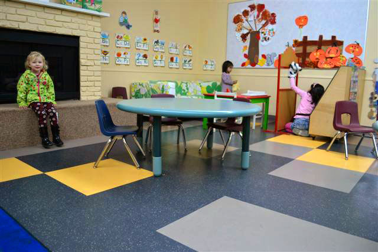

Pomme d'Api Preschool
About Pomme d'Api
Pré-maternelle Pomme d'Api Preschool offers preschool education for children in Vancouver to help foster their social and cognitive development while teaching and encouraging the use of the French language. The preschool caters to families who desire to have their children benefit from the richness of a French Immersion Program, or who are Francophone themselves and need to have their children continue learning in their mother tongue.
Pomme D'Api is a non-profit, parent-run preschool; it is completely self-supporting and managed by a parent board.
Pomme d'Api is licensed and inspected by the government of British Columbia through the Vancouver City Health Department under the Community Care Facilities Act.
